TRIP OVERVIEW
Day 1 – Santa Cruz Beach Boardwalk · Santa Cruz Municipal Wharf · Natural Bridges State Beach · Henry Cowell Redwoods State Park
Day 2 – Santa Cruz Surfing Museum · Mission Santa Cruz · UC Santa Cruz · Wilder Ranch State Park
Day 3 – Mystery Spot · Felton Covered Bridge · Roaring Camp Railroads
Day 4 – Venetian Court · New Brighton State Beach · Seacliff State Beach · The Forest of Nisene Marks State Park
Day 5 – Davenport · Big Basin Redwoods State Park
Day 1
🏨 From Hotel: 🚶 5 min · 🚕 2 min → Santa Cruz Beach Boardwalk
1. Santa Cruz Beach Boardwalk
↳ California's oldest surviving amusement park, open since 1907 on the shore of Monterey Bay. The Giant Dipper wooden roller coaster — built 1924 — and the Looff Carousel — built 1911 — are both National Historic Landmarks, the only dual-designated amusement park attractions in the US.
🏛️ Monday - Wednesday 11:00am - 9:00pm · Thursday 11:00am - 7:00pm · Friday - Saturday 11:00am - 10:00pm · Sunday 11:00am - 9:00pm
⏰ ~3 hr
🆓 Free

🚶 12 min · 🚕 3 min → Santa Cruz Municipal Wharf
2. Santa Cruz Municipal Wharf
↳ Opened December 5, 1914, the wharf stretches 2,745 feet into Monterey Bay. Sea lions haul out on floating platforms beneath the planks year-round — peer through the deck gaps to watch them directly below. Stagnaro Bros. has operated seafood here since 1937.

🚕 8 min → Natural Bridges State Beach
3. Natural Bridges State Beach
↳ A sea-carved sandstone arch spans the cove — the last of three natural bridges that once stood here. From mid-October through mid-February, the eucalyptus grove hosts California's largest monarch butterfly overwintering colony, designated the state's only Monarch Preserve.

🚕 20 min → Henry Cowell Redwoods State Park
4. Henry Cowell Redwoods State Park
↳ A 40-acre grove of old-growth coast redwoods in Felton. The tallest tree is 277 feet tall, 16 feet wide, and 1,500 years old. A photographer's visit here in the early 1900s sparked the Sempervirens Club and the California redwood preservation movement.

🚕 20 min → hotel
Day 2
🏨 From Hotel: 🚶 12 min · 🚕 3 min → Santa Cruz Surfing Museum
1. Santa Cruz Surfing Museum
↳ The world's first surfing museum, established in 1986 inside the Mark Abbott Memorial Lighthouse at Lighthouse Point. Photographs and boards trace a century of surf history, honoring the Hawaiian princes who surfed the San Lorenzo River mouth in 1885.
🏛️ Thursday - Monday 12:00pm - 4:00pm
🚫 Closed Tuesday - Wednesday
⏰ ~45 min
🆓 Free
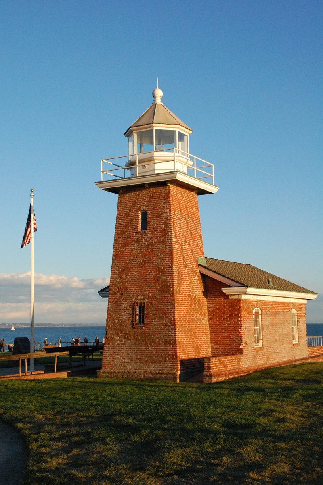
🚶 34 min · 🚕 7 min → Mission Santa Cruz
2. Mission Santa Cruz
↳ Founded August 28, 1791 by Father Fermín Francisco de Lasuén, the twelfth of California's Spanish missions. The adjoining adobe — built 1822-24 to house Ohlone and Yokuts neophyte families — is the oldest surviving structure in Santa Cruz County.
🏛️ Monday 10:00am - 4:00pm · Thursday - Saturday 10:00am - 4:00pm · Sunday 12:00pm - 4:00pm
🚫 Closed Tuesday - Wednesday
⏰ ~45 min
🆓 Free
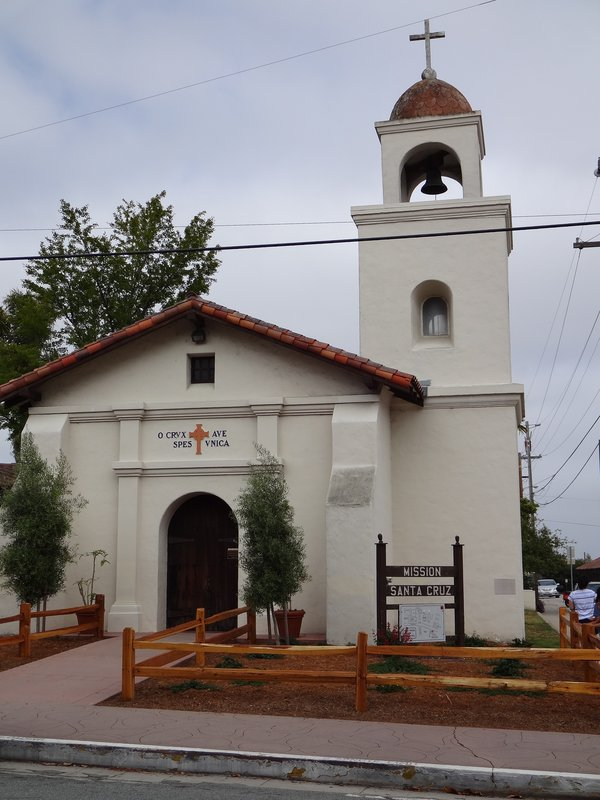
🚕 10 min → UC Santa Cruz
3. UC Santa Cruz
↳ A 2,001-acre campus built directly into the redwood forest of the Santa Cruz Mountains. Kresge College's cascading "hill village" design by Charles Moore and the brutalist McHenry Library are the campus's best-known architectural landmarks.
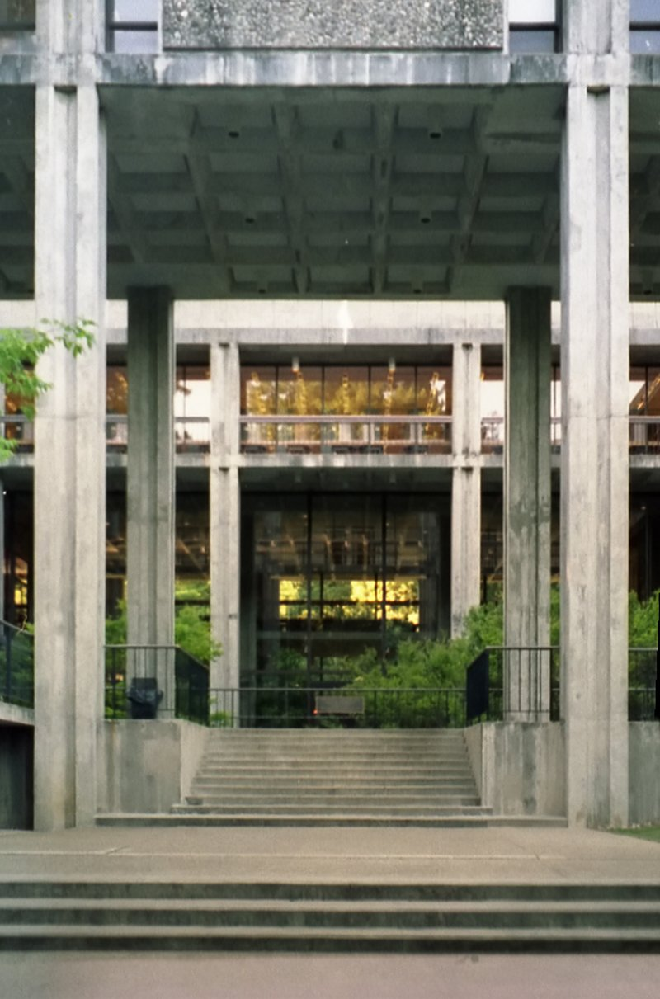
🚕 12 min → Wilder Ranch State Park
4. Wilder Ranch State Park
↳ A 7,000-acre coastal property worked as a dairy ranch from 1871 to 1969 by Delos Wilder and partner L.K. Baldwin. The restored 1897 Victorian home and 1840s Bolcoff Adobe form a living-history complex above bluff and sea-cave trails.
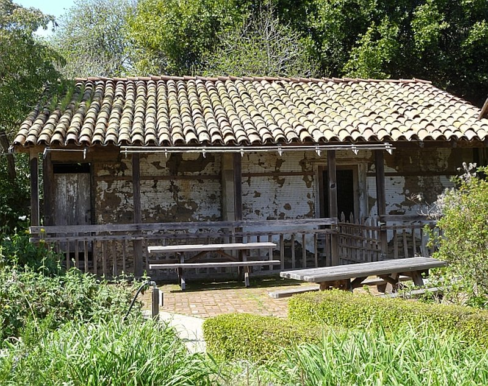
🚕 10 min → hotel
Day 3
🏨 From Hotel: 🚕 10 min → Mystery Spot
1. Mystery Spot
↳ Opened to the public in June 1941 by electrician George Prather, the first gravity-hill illusion attraction built in California. A guided tour walks a steep pathway and a wooden building tilted 20 degrees, tricking the eye into perceiving impossible balance and height.
🏛️ Monday - Friday 10:00am - 4:00pm · Saturday - Sunday 10:00am - 5:00pm
⏰ ~45 min
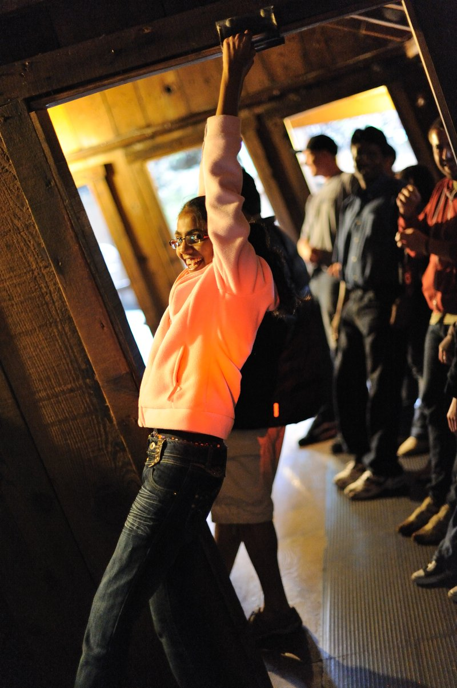
🚕 12 min → Felton Covered Bridge
2. Felton Covered Bridge
↳ Built in 1892 over the San Lorenzo River using a Brown truss system, the 80-foot span is considered the tallest covered bridge in the United States and served as Felton's main entry point for 45 years.
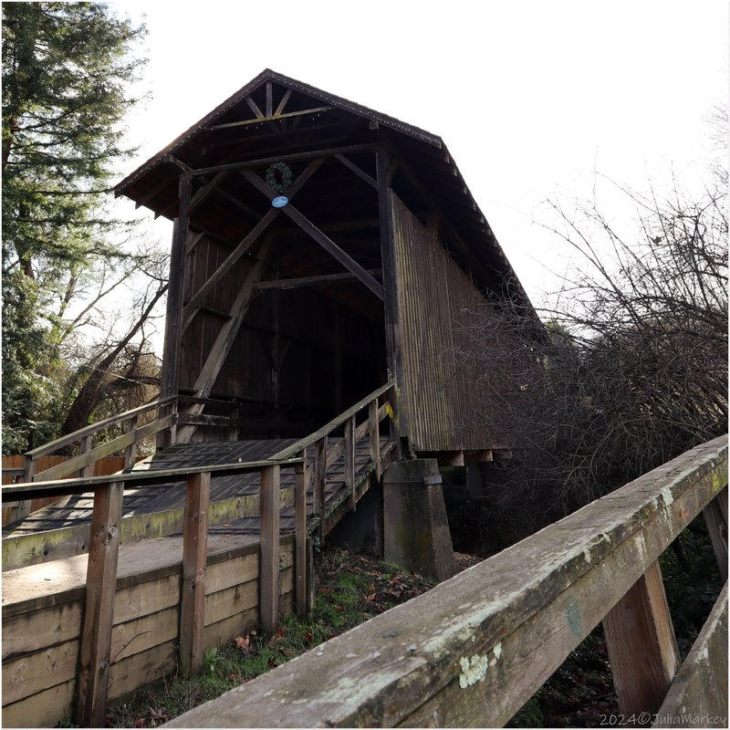
🚶 14 min · 🚕 3 min → Roaring Camp Railroads
3. Roaring Camp Railroads
↳ The Redwood Forest Steam Train runs a 75-minute round trip over trestles and through old-growth redwood groves to the summit of Bear Mountain, narrated by the conductor along the way.
🏛️ Daily 10:00am - 4:00pm
⏰ ~1 hr 15 min
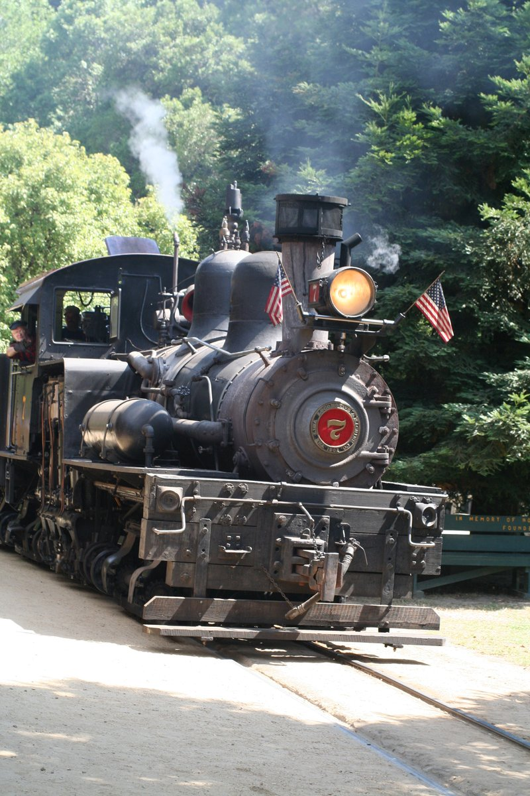
🚕 20 min → hotel
Day 4
🏨 From Hotel: 🚕 12 min → Venetian Court
1. Venetian Court
↳ Built 1924-25 in Mediterranean, Spanish Colonial, and Mission Revival styles facing Capitola Beach, Venetian Court is recognized as one of the first condominium seaside developments in California.
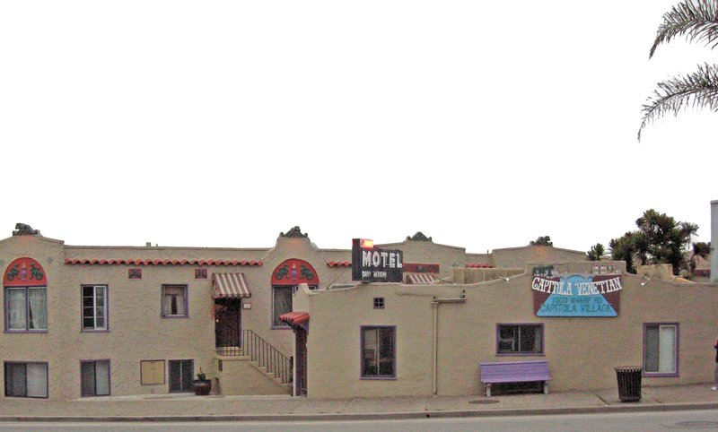
🚶 20 min · 🚕 4 min → New Brighton State Beach
2. New Brighton State Beach
↳ Originally called China Beach for the Chinese fishermen who settled the cove in the 1850s, the site was later developed as the Camp San Jose resort and renamed New Brighton in 1882. Cypress-lined bluffs drop to the sand via a dramatic staircase.
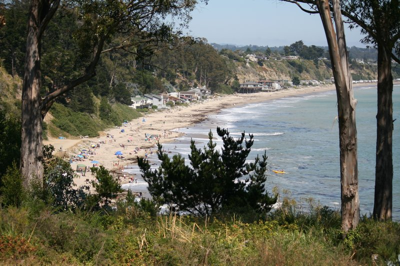
🚶 20 min · 🚕 3 min → Seacliff State Beach
3. Seacliff State Beach
↳ Home to the SS Palo Alto, a WWI-era concrete tanker launched in 1919 as the first concrete tanker and the largest concrete ship built at the time, grounded here in 1930 as an amusement pier and later a fishing pier.
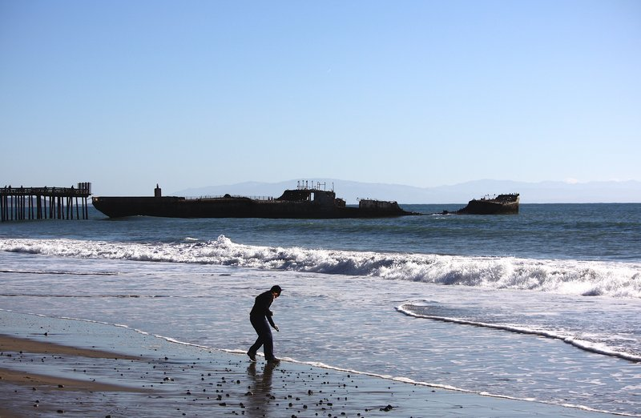
🚕 9 min → The Forest of Nisene Marks State Park
4. The Forest of Nisene Marks State Park
↳ Over 10,000 acres of second-growth redwood forest in the Aptos Creek watershed, the park's best-known landmark is the marked epicenter of the October 17, 1989 Loma Prieta earthquake.
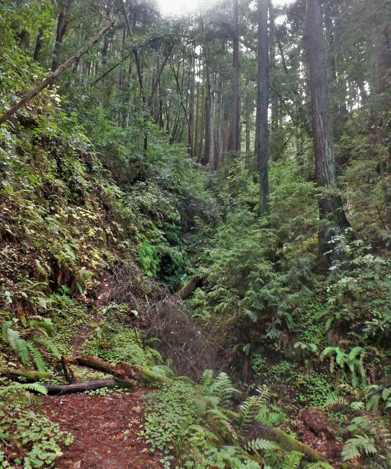
🚕 20 min → hotel
Day 5
🏨 From Hotel: 🚕 22 min → Davenport
1. Davenport
↳ A coastal hamlet of under 400 residents nine miles up Highway 1, ringed by dramatic bluffs and sea cliffs. Whaling captain John Pope Davenport built a 400-foot wharf here in 1867 to ship lumber.
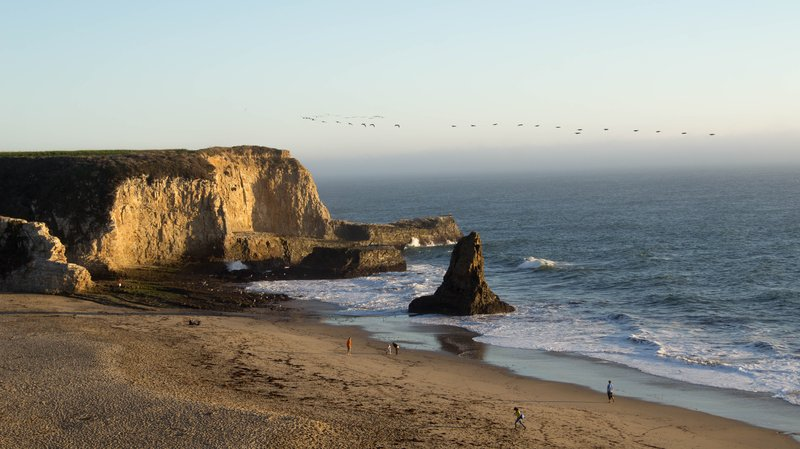
🚕 40 min → Big Basin Redwoods State Park
2. Big Basin Redwoods State Park
↳ California's oldest state park protects the largest continuous stand of ancient coast redwoods south of San Francisco. A wildfire burned most of the park's structures; the headquarters area and a portion of the trail network have since reopened for day use while long-term rebuilding continues.
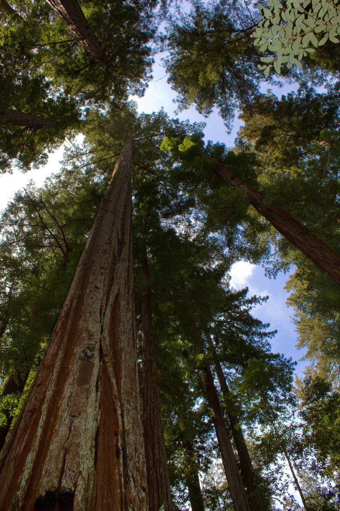
🚕 50 min → hotel
🗓️ Weekly Closures
Museums & Historic Sites · Closed Tuesday - Wednesday
📅 Tours
No qualifying tours on Viator in Santa Cruz.
No qualifying tours on GetYourGuide in Santa Cruz.
No qualifying tours on TripAdvisor in Santa Cruz.
☕ Cappuccino
Shrine Coffee · 4.5⭐ · 172+ reviews
🫕 Restaurants Near Hotel
The Picnic Basket · 4.1⭐ · 1005+ reviews
↳ Counter-service café near the wharf — sandwiches, salads, and gelato.
🏛️ Monday - Thursday 7:00am - 4:00pm · Friday - Sunday 7:00am - 9:00pm
🚶 7 min · 🚕 2 min
La Posta · 4.5⭐ · 441+ reviews
↳ Neighborhood Italian in Seabright — house-made pasta and pizza.
🏛️ Wednesday - Thursday 5:00pm - 8:30pm · Friday - Saturday 5:00pm - 9:30pm · Sunday 5:00pm - 8:30pm
🚫 Closed Monday - Tuesday
🚕 5 min
Oswald · 4.4⭐ · 550+ reviews
↳ Contemporary American open since 1995 — Central Coast ingredients downtown.
🏛️ Tuesday 5:00pm - 8:30pm · Wednesday - Thursday 12:00pm - 2:30pm · 5:00pm - 8:30pm · Friday 12:00pm - 2:30pm · 5:00pm - 9:30pm · Saturday 5:00pm - 9:30pm
🚫 Closed Sunday - Monday
🚕 5 min
🍽️ Downtown Restaurants
Gabriella Cafe · 4.5⭐ · 529+ reviews
↳ Farm-to-table on Cedar St since 1992 — pasta with County farm ingredients.
🏛️ Monday - Friday 11:30am - 2:30pm · 5:30pm - 9:00pm · Saturday - Sunday 11:00am - 2:30pm · 5:30pm - 9:00pm
Laili Restaurant · 4.5⭐ · 1548+ reviews
↳ Afghan-Mediterranean fusion — pomegranate chicken in a downtown courtyard.
🏛️ Tuesday - Thursday 11:30am - 2:30pm · 5:00pm - 8:30pm · Friday - Saturday 11:30am - 2:30pm · 5:00pm - 9:00pm
🚫 Closed Sunday - Monday
Copal · 4.5⭐ · 440+ reviews
↳ Oaxacan cooking from Chef Ana Fabian Mendoza — moles and tlayudas.
🏛️ Monday 4:00pm - 8:30pm · Wednesday - Thursday 11:30am - 8:30pm · Friday - Saturday 11:30am - 9:30pm · Sunday 11:30am - 8:30pm
🚫 Closed Tuesday
🍮 Local Tastes
Clam Chowder in a Sourdough Bread Bowl
↳ The defining dish of the Municipal Wharf. The Clam Chowder Cook-Off at the Boardwalk every February draws thousands of competitors. Stagnaro Bros. and Riva Fish House serve their versions on the pier.
Dungeness Crab
↳ In season November through June. The wharf fish market sells them live, cooked whole, or cracked and cleaned to eat on the spot.
Artichoke
↳ The county sits in the heart of California's artichoke belt. Whole roasted artichokes and artichoke soup appear on menus countywide.
🎭 Shows, Performances & Concerts
No exceptional shows, performances, or concerts in Santa Cruz.
🚆 Train Stations Near Hotel
No train stations in Santa Cruz.
⛲️ Day Trips by Train
No day trips from Santa Cruz.
🏓 Pickleball
No pickleball courts within 25 min walk of the hotel.
⭐ Michelin Restaurants
No Michelin-starred restaurants in Santa Cruz.
❗️ Heads Up
Boardwalk Rides — Seasonal Operation Only
↳ Full daily ride operation runs mid-June through Labor Day only. Off-season the rides open weekends and holidays only.
Hwy 17 — Weekend Traffic Jams
↳ Highway 17 over the Santa Cruz Mountains backs up severely on Friday afternoons and Sunday evenings.
Boardwalk Parking — First Come First Served
↳ Boardwalk lots have no in-and-out privileges and fill by late morning on summer weekends.
Natural Bridges Butterflies — October to February Only
↳ The monarch butterfly grove is empty in summer. Natural Bridges is still worth visiting for the arch and beach.
Henry Cowell — No Public Transit
↳ No bus serves the park in Felton. A rideshare is required for the 20-minute drive from downtown.
Big Basin — Limited Post-Fire Access
↳ Only the headquarters area and part of the trail network are open for day use after wildfire damage; a parking reservation is recommended.